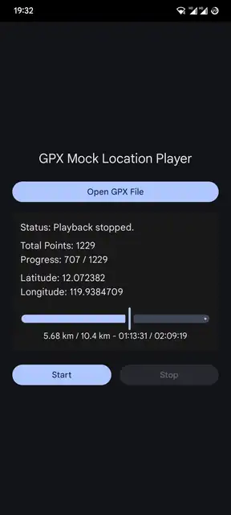
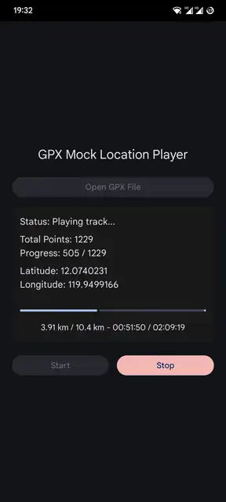

Mock Location that actually works
خرائط وسفر
GPX Mock Location allows you to simulate GPS movement on your Android device by replaying tracks and waypoints from standard GPX files. The app parses coordinates and timestamps directly from your GPX files, calculating delays between points to replicate real-world movement speeds. Playback runs con
✓ ترخيص مفتوح (GPL-3.0-only) · آخر تحديث: 2026-10-04
0.2.3الإصدار
8.0 MBالحجم
GPL-3.0-onlyالرخصة
Open in Kanzتحميل APK (8.0 MB)
Download APK
SHA-256: 2b187e0455b68d63c76f74414f3a742d7ea944023863a05de8c15363498eb23a


تطبيقات تانية لنفس المطوّر (2)
More apps from this developer: su.mya
امسح الكود لفتح صفحة التطبيق
Scan to open this app page
لو كنز مش متثبت عندك: نزّل متجر كنز.
Not installed? Get the Kanz store.